Product overview
See running services, namespaces, resource usage, and logs in one workspace.
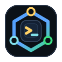
alterpmA practical guide to running, organizing, and observing your local services. Start with a short walkthrough, then follow the steps for your own workspace.
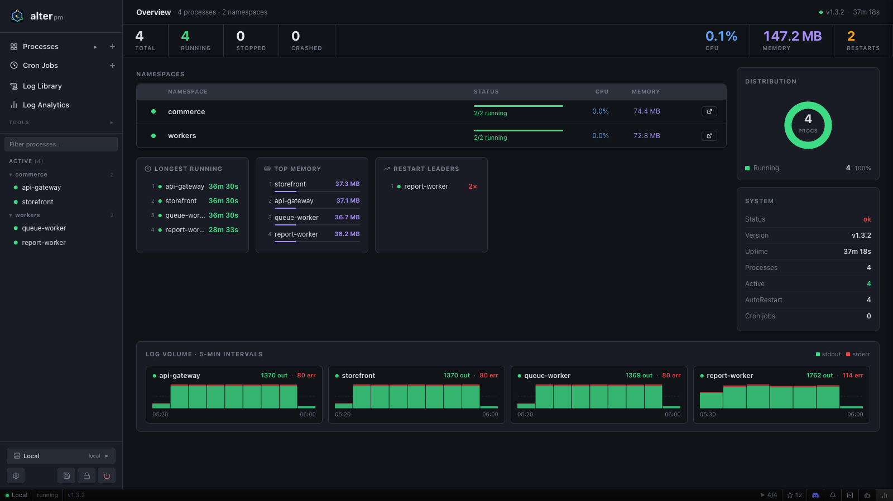
Screenshots and videos use local sample services. Alter is a developer tool for your own machine.
Follow the full series, or jump to the workflow you need. Each demo includes narration and soft background music.
See running services, namespaces, resource usage, and logs in one workspace.
Configure a worker, start it, inspect its output, and control its lifecycle.
Filter live output, browse saved logs, and compare activity across your services.
Select a preview to load the YouTube player. If playback is unavailable here, use its YouTube link.
Install a Windows release or build from source on macOS and Linux. The dashboard is included in the binary after the build.
winget install thechandanbhagat.alterAlternatively, download the Windows setup installer from GitHub Releases. The installer adds alter.exe to your PATH.
Install Rust and Node.js 20.19 or newer. On macOS, install the Xcode command-line tools; on Debian or Ubuntu, install pkg-config and libssl-dev.
git clone https://github.com/thechandanbhagat/alter-pm
cd alter-pm
(cd web-ui && npm ci && npm run build)
cargo install --path .
alter --versionBuild the dashboard first: Rust embeds web-ui/dist/ into the binary. Node.js is required for this build, but is not a runtime dependency of alter itself.
For platform-specific setup and troubleshooting, see the installation instructions in the README.
127.0.0.1 by default. Alter is not hardened for production or public-facing use.Run alter daemon start to launch the background daemon. It listens on 127.0.0.1:2999 by default.
Navigate to http://127.0.0.1:2999 in your browser. On first visit you will be asked to set a password.
Choose a strong password for the dashboard. This password is stored as an argon2id hash — it is never stored in plain text.
The process list is empty on first run. Click Start new process to add your first process.
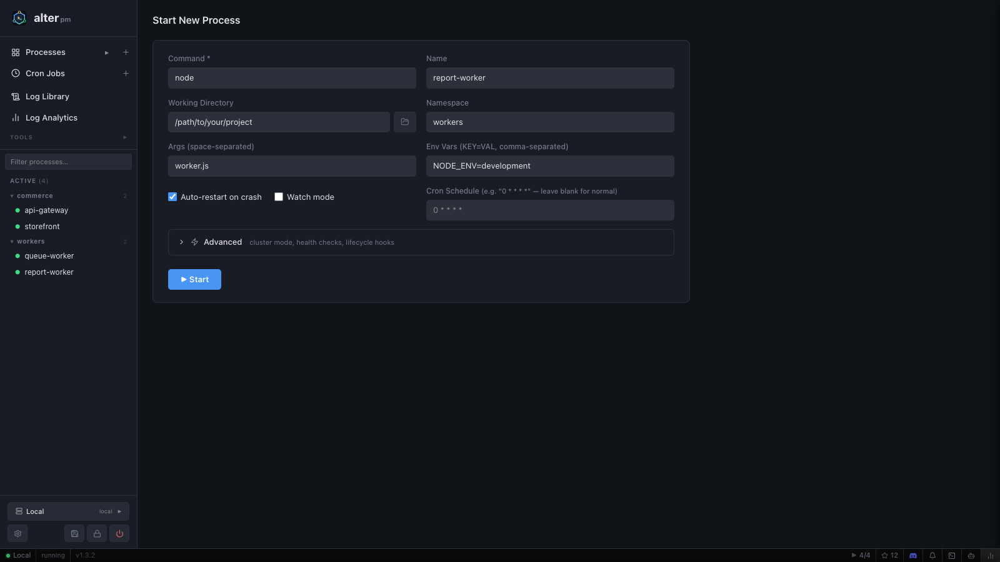
%APPDATA%\alter-pm2\ on Windows, or ~/.alter-pm2/ on Linux/macOS.alter daemon start # Start in background
alter daemon stop # Stop gracefully
alter daemon status # Check running status
alter daemon start --port 4000 # Use custom portUse the left sidebar to switch between processes, scheduled jobs, and logs. Select the alter logo to return to the overview. Expand Processes to browse namespace groups.
| Link | Description |
|---|---|
| Processes ▼ | List and manage all running/stopped processes. Dropdown shows namespace groups. |
| Cron Jobs ▼ | Scheduled tasks with cron expressions. |
| Log Library | Browse and search logs from every process in one place. |
| Log Analytics | Compare stdout and stderr activity in five-minute intervals, per process. |
| TOOLS ▼ | Tunnels and Port Finder. |
The sidebar groups active processes by namespace. Use its filter to find a process, select a process name to inspect it, or select a namespace to see the related process list.
The bottom status bar always shows:
At the bottom-left of the sidebar:
Watch the workflow: launch, stop, and restart a worker · 55 seconds ↗
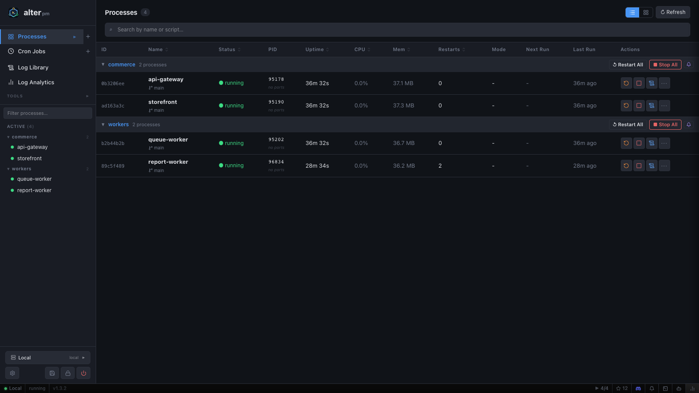
web-server)node, python)-- (e.g. server.js)servers, workers)KEY=VALUE pairs, comma-separated| Status | Color | Meaning |
|---|---|---|
| running | Green | Process is alive and healthy. |
| errored | Red | Process exited with a non-zero code or crashed. |
| stopped | Gray | Process was manually stopped. |
| disabled | Gray (row tint) | Process is excluded from auto-start. Row appears with a subtle gray background. |
| launching | Orange | Process is in the process of starting. |
Each process row has action buttons on the right:
Disabling a process excludes it from the auto-start list. This is useful for seasonal scripts or processes you want to keep configured but not running. Disabled processes:
To enable/disable: click the process name to open the Process Detail page, then toggle the Enabled switch.
Namespaces are labels that group related processes in the sidebar. For example:
web-server → namespace: "servers"
api-worker → namespace: "workers"
bg-sync → namespace: "workers"Click a namespace in the sidebar to filter the list to that group only. Processes without a namespace appear under default.
Click a process name to open its detail page. Here you can:
The log viewer streams new lines in real time via Server-Sent Events (SSE). Controls:
Toggle between Table view (compact) and Card view (expanded with graphs) using the view mode button in the top-right of the process list. Your preference is persisted in the daemon settings.
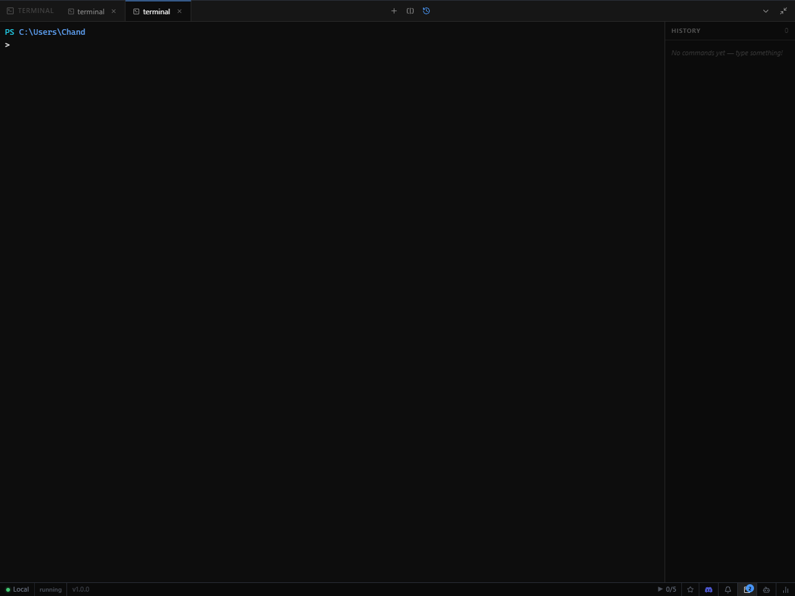
alter includes a full xterm.js terminal at the bottom of the screen. Open it with the Terminal button in the status bar or press Ctrl+T.
Each terminal tab is an independent shell session. Tabs are labeled by their shell name and working directory. Switch tabs by clicking them or use keyboard shortcuts.
Press Ctrl+Shift+T to split the current tab into two side-by-side panes. Each pane is an independent shell.
Command history is automatically persisted to the daemon data directory (%APPDATA%\alter-pm2\terminal-history.json on Windows). Up to 150 commands per session are stored, and history is restored when you reopen the same terminal tab.
Drag the terminal panel's top edge to resize it vertically. Minimize and maximize buttons are also available in the terminal toolbar.
Watch the workflow: logs and monitoring · 53 seconds ↗
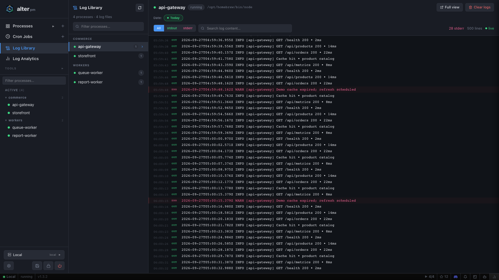
The Log Library (Log Library in the navigation) provides a unified view of all process logs in one searchable interface.
Open a process and enter a search term in Filter logs. In this example, GET /health narrows the output to health requests. Expand Insights to inspect CPU, memory, log volume, and recurring patterns.
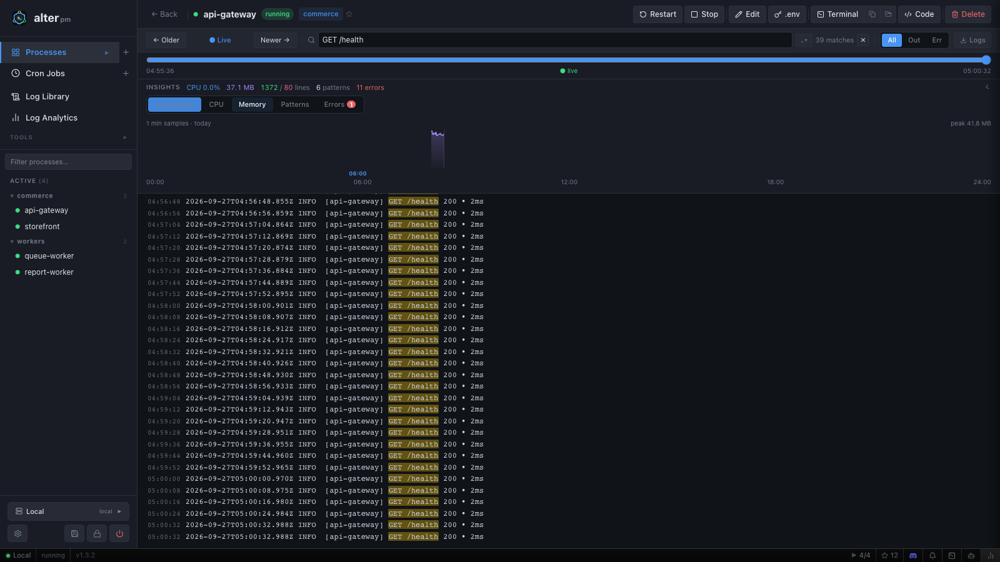
Select Log Analytics in the sidebar to compare stdout and stderr activity in five-minute intervals. The aggregate chart, top-by-volume list, and per-process charts help you identify the busiest services.
Logs are stored at:
%APPDATA%\alter-pm2\logs\<process-name>\out.log and err.log~/.alter-pm2/logs/<process-name>/out.logLog rotation runs in the background — no configuration needed:
| Setting | Value |
|---|---|
| Max file size | 10 MB per log file |
| Retained copies | 5 rotated files per process |
| Daily rotation | Midnight rollover |
| Archive retention | 30 days of dated archives |
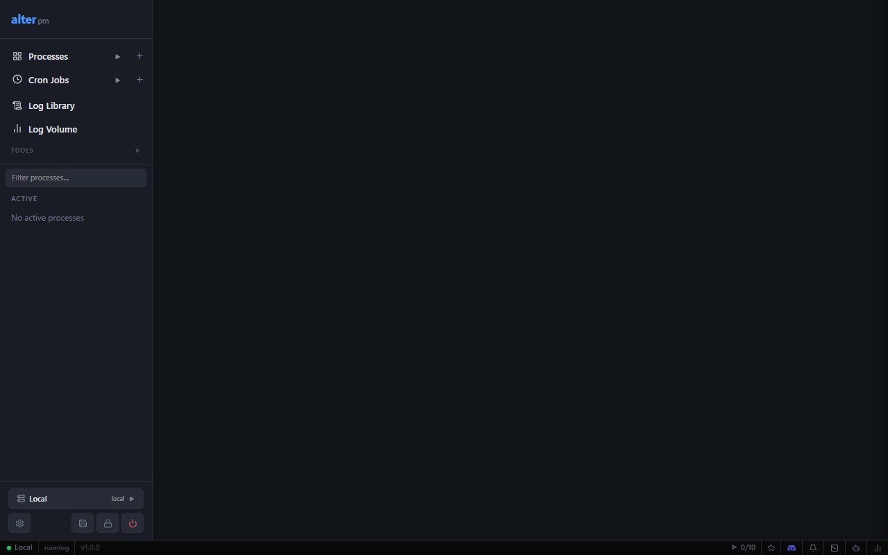
Create scheduled tasks that run on a cron schedule. Navigate to Cron Jobs in the top bar, then click New cron job.
| Field | Description | Example |
|---|---|---|
| Name | Identifier for the job | db-backup |
| Schedule | Standard 5-field cron expression | 0 2 * * * (2am daily) |
| Command | Executable to run | bash |
| Arguments | Args after -- | backup.sh |
| Working dir | Directory to run from | /opt/scripts |
| Namespace | Grouping label | maintenance |
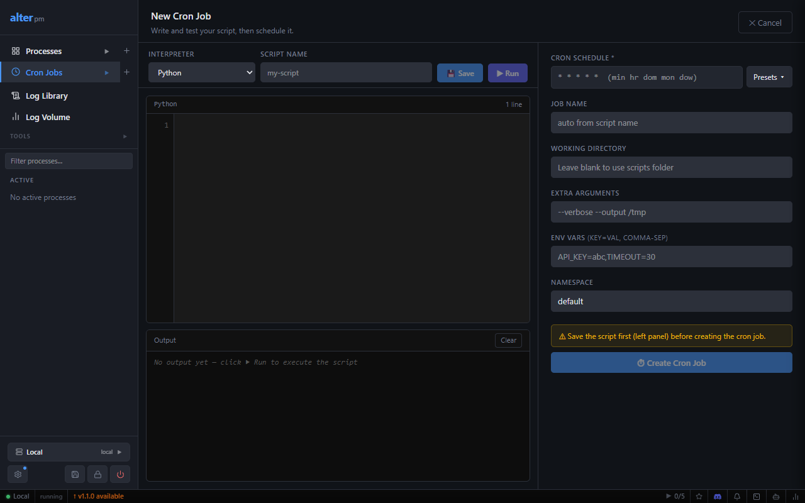
| Expression | Meaning |
|---|---|
* * * * * | Every minute |
0 * * * * | Every hour (on the hour) |
0 9 * * * | Every day at 9:00 AM |
0 9 * * 1-5 | Weekdays at 9:00 AM |
0 2 * * 0 | Every Sunday at 2:00 AM |
0 0 1 * * | First day of every month at midnight |
The cron jobs list shows each job with:
Ecosystem files let you define multiple processes (and their configurations) in a single JSON or YAML file — similar to PM2's ecosystem files.
{
"apps": [
{
"name": "web-server",
"command": "node",
"args": ["server.js"],
"cwd": "/opt/app",
"namespace": "production",
"instances": 1,
"env": { "PORT": "3000", "NODE_ENV": "production" },
"autorestart": true
},
{
"name": "worker",
"command": "python",
"args": ["worker.py"],
"cwd": "/opt/app",
"instances": 4,
"autorestart": true
}
]
}Set "instances": N (where N > 1) to spawn multiple copies of a process. Instances are named worker-0, worker-1, etc.
# Via CLI
alter ecosystem start /path/to/ecosystem.json
# Via API (POST /api/v1/ecosystem/start)
curl -X POST http://127.0.0.1:2999/api/v1/ecosystem/start \
-H "Authorization: Bearer <token>" \
-H "Content-Type: application/json" \
-d @ecosystem.jsonFor multi-instance process groups, trigger a rolling restart (one instance at a time with a brief delay) to achieve zero-downtime deploys:
# Via API (POST /api/v1/processes/group/{name}/rolling-restart)
curl -X POST http://127.0.0.1:2999/api/v1/processes/group/worker/rolling-restart \
-H "Authorization: Bearer <token>" \
-H "Content-Type: application/json" \
-d '{"config": {...}}'
Expose local ports to the public internet using Cloudflare Tunnel, ngrok, or a custom provider. Navigate to TOOLS → Tunnels.
3000).| Provider | Free tier | Auth required |
|---|---|---|
| Cloudflare | ✅ Yes (with account) | Cloudflare auth token |
| ngrok | ✅ Limited (1 tunnel) | ngrok auth token |
| Custom | Varies | Configure binary path + args |
Configure provider credentials in Settings → Tunnels.
The Port Finder page lists all active TCP listeners on the host. LISTENING ports show a Tunnel button — click it to instantly create a tunnel for that port without navigating away.
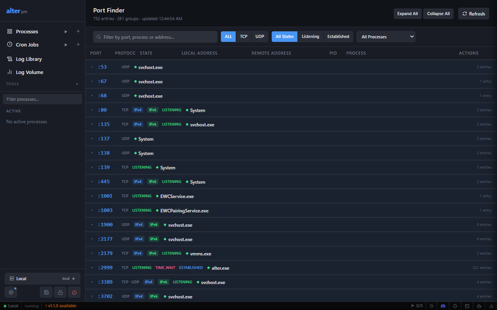
Navigate to TOOLS → Port Finder to see all active TCP listeners on the host machine.
Every row with a LISTENING port shows a Tunnel action button. Clicking it pre-fills the Tunnels page with that port, so you can expose it publicly in one click without leaving the Port Finder.
Click Refresh to rescan — the list updates in real time. Use the search bar to filter by port number, process name, or address.
Connect to alter daemons running on remote machines from one dashboard. Click the server switcher in the sidebar footer to manage connections.
Click the server name in the sidebar footer, then Add server. Two connection types are available:
| Type | When to use |
|---|---|
| Direct | alter daemon is accessible directly on its HTTP port (LAN, VPN, or public IP). |
| SSH | The remote machine is only accessible via SSH. alter creates a local port forward. |
After adding, click the server name to switch to it. The tunnel command is shown so you can run it manually if needed.
remote-servers.json), not in browser localStorage. They persist across browser sessions and are shared between browsers.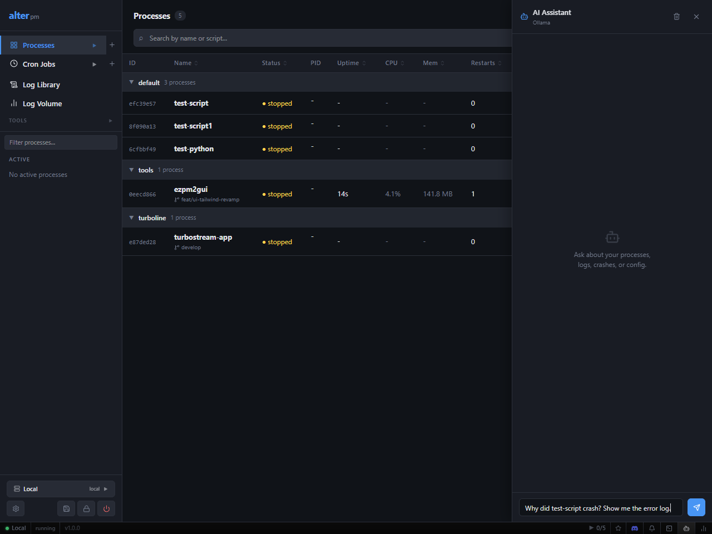
The AI Assistant panel (accessible from the status bar) lets you chat about your processes, logs, and configuration using a local or cloud-hosted LLM.
| Provider | Type | Notes |
|---|---|---|
| Ollama | Local | Runs on your machine. No internet required. Fast, private. |
| GitHub Copilot | Cloud | Uses your existing Copilot subscription. OAuth Device Flow sign-in. |
| Claude (Anthropic) | Cloud | Requires an Anthropic API key from console.anthropic.com. |
| OpenAI | Cloud | Requires an OpenAI API key. Supports custom base URLs (Azure, Groq, LM Studio). |
ollama pull llama3.2http://localhost:11434 (default)api-worker process crash?"web-server"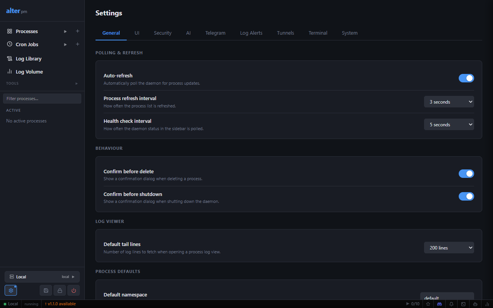
ALTER_LOG_DIR env varClick Check for updates to query GitHub Releases for a newer version. If an update is available, click Update Now (binary self-update) or Download & Install (installer). The daemon restarts automatically after the update.
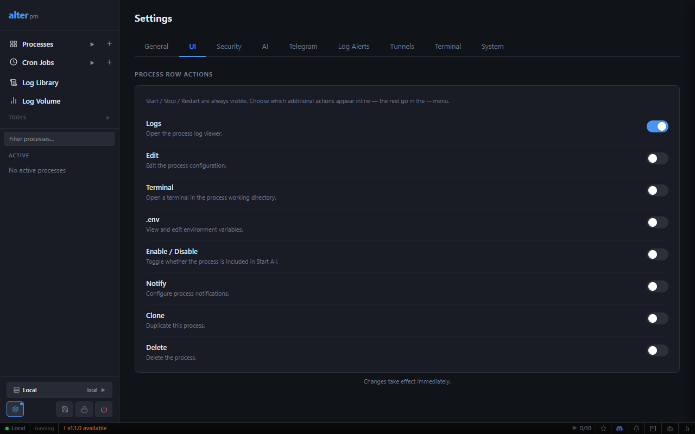
Customize the visual appearance of the dashboard.
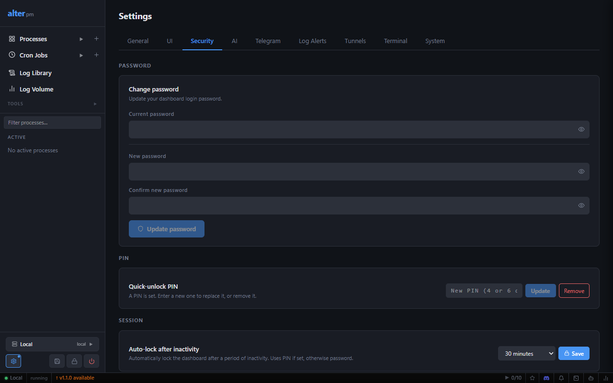
Change your dashboard login password. The new password must be at least 8 characters. A strength meter indicates password quality.
Set a 4 or 6 digit numeric PIN for the lock screen. The PIN is faster to type than a full password and is stored as an argon2id hash. To remove the PIN, click Remove after setting one.
Configure automatic inactivity lock:
Inactivity is detected via mouse movement, keyboard input, clicks, and scroll events. Locking uses the PIN if configured, otherwise the full password.
You can also lock immediately at any time using the Lock screen button in the sidebar footer.
alter binary itself) never expires.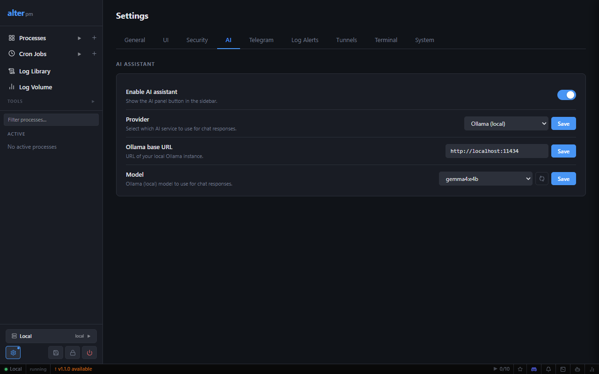
Toggle the AI panel visibility. When disabled, the AI button in the status bar is hidden.
http://localhost:11434)llama3.2, codellama)github.com/login/device and enter itsk-ant-…XYZ) is shownsk-…)After configuring a provider, click Refresh (↺) next to the model dropdown to fetch available models. The selector is populated with models returned by the provider's API.
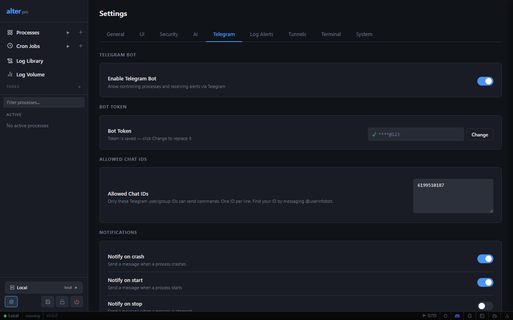
Configure a Telegram bot to control your processes and receive notifications from anywhere.
/newbot, and copy the bot token.| Event | Default | Description |
|---|---|---|
| Crash | ✅ On | Sent when a process exits unexpectedly (non-zero exit code). |
| Start | Off | Sent when a process is started manually or via auto-restart. |
| Stop | Off | Sent when a process is stopped. |
| Restart | ✅ On | Sent when a process is restarted (auto or manual). |
Configure pattern-based log monitoring. When a process log line matches a defined pattern, alter can send an alert via Telegram (if configured) or display a desktop notification.
ERROR|CRITICAL|OOM)Configure your tunnel provider credentials and default settings.
cloudflared auth token{port} as a placeholder for the local port)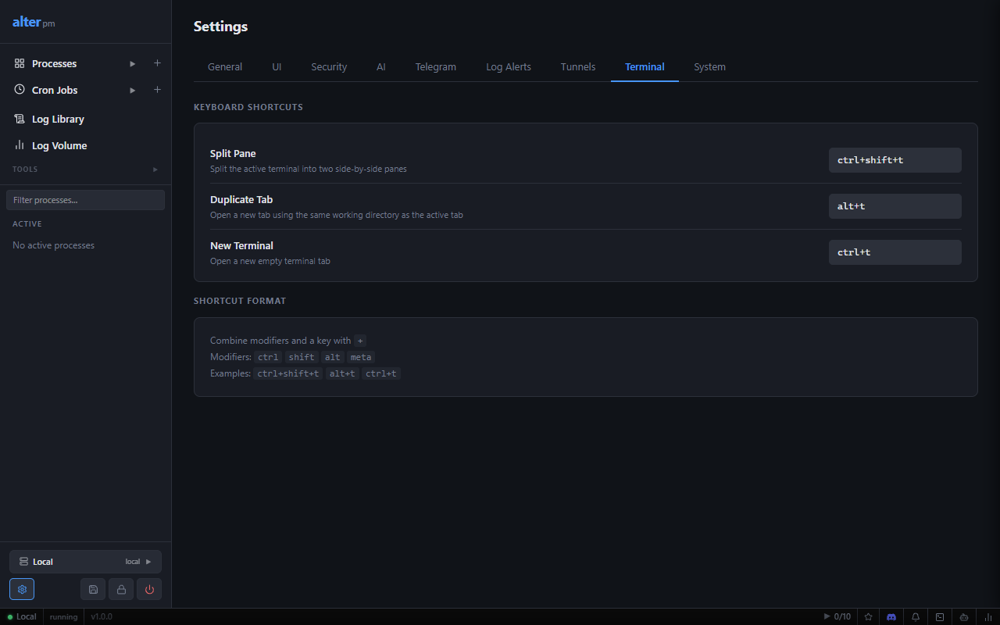
Customize the built-in terminal panel.
bash, zsh, powershell, cmd)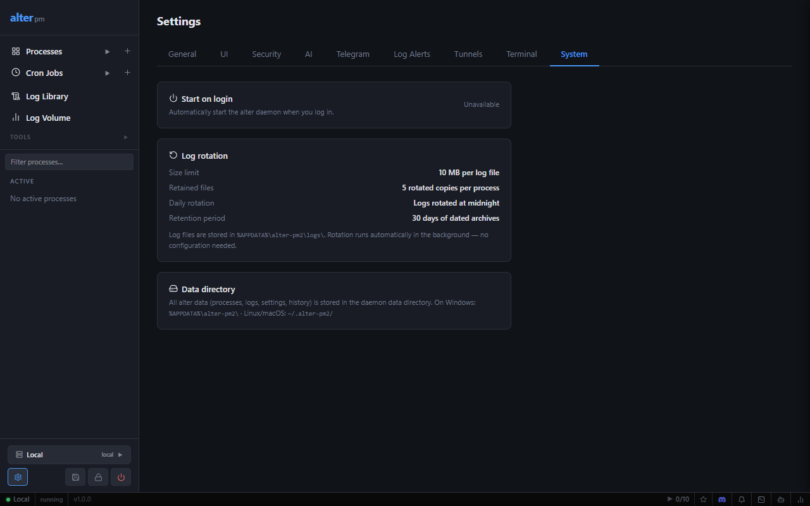
Automatically start the alter daemon when you log in to the operating system.
~/.config/systemd/user/alter-daemon.service) and enables it~/Library/LaunchAgents/Click Enable to register, Disable to remove the registration. The current status (enabled/disabled) and method are shown.
Informational summary of the automatic log rotation settings (not configurable from the UI):
| Setting | Value |
|---|---|
| Size limit | 10 MB per log file |
| Retained files | 5 rotated copies per process |
| Daily rotation | Logs rotated at midnight |
| Retention period | 30 days of dated archives |
All alter data is stored in a single directory:
%APPDATA%\alter-pm2\~/.alter-pm2/This directory contains: state.json, auth.json, settings.json, ui-settings.json, telegram.json, tunnel.json, remote-servers.json, terminal-history.json, and the logs/ subdirectory.
| Shortcut | Action |
|---|---|
| Ctrl+T | Open new terminal tab |
| Ctrl+Shift+T | Split terminal pane |
| Ctrl+W | Close current terminal tab |
| ↑ / ↓ | Navigate terminal command history |
| Ctrl+L | Clear terminal screen |
| Ctrl+C | Interrupt running command (in terminal) |
| Command | Description | Example |
|---|---|---|
| /list | List all processes and their status | /list |
| /start <name> | Start a stopped or errored process | /start web-server |
| /stop <name> | Stop a running process | /stop api-worker |
| /restart <name> | Restart a process | /restart web-server |
| /logs <name> [lines] | Show recent log lines (default 20) | /logs api-worker 50 |
| /status <name> | Show detailed status (PID, uptime, restarts) | /status web-server |
| /ping | Check if the bot is reachable | /ping |
| /help | Show all available commands | /help |
alter daemon statuscurl http://127.0.0.1:2999/api/v1/healthIf cargo build fails with a "locked file" error, the daemon is running and has locked alter.exe. Stop it first:
curl -X POST http://127.0.0.1:2999/api/v1/system/shutdown \
-H "Authorization: Bearer <master-token>"The master token is stored in %APPDATA%\alter-pm2\auth.json.
Settings are saved to the daemon's API at /api/v1/system/ui-settings. Confirm:
Run as administrator if SCHTASKS fails. Verify with:
schtasks /query /tn alter-daemonLog rotation runs automatically, but if you're in a high-throughput scenario:
ALTER_LOG_DIR env var